library(tidyverse)
library(dplyr)
library(maps)
library(ggrepel)
library(tidymodels)
library(gridExtra)TidyTuesday Exercise
Introduction
This TidyTuesday exercise uses the dataset “Timely and Effective Care - State” which can be found on Centers for Medicare and Medicaid Services. It contains state-level data for measures of cataract surgery outcome, colonoscopy follow-up, emergency department care, preventive care, and pregnancy and delivery care.
Loading packages
Loading data
The data was loaded according to the instructions
care_state <- readr::read_csv('https://raw.githubusercontent.com/rfordatascience/tidytuesday/main/data/2025/2025-04-08/care_state.csv')Initial data exploration and cleaning
To begin with, I will perform some initial data exploration to better understand the dataset.
# Examine the structure and summary
str(care_state)spc_tbl_ [1,232 × 8] (S3: spec_tbl_df/tbl_df/tbl/data.frame)
$ state : chr [1:1232] "AK" "AK" "AK" "AK" ...
$ condition : chr [1:1232] "Healthcare Personnel Vaccination" "Healthcare Personnel Vaccination" "Emergency Department" "Emergency Department" ...
$ measure_id : chr [1:1232] "HCP_COVID_19" "IMM_3" "OP_18b" "OP_18b_HIGH_MIN" ...
$ measure_name: chr [1:1232] "Percentage of healthcare personnel who are up to date with COVID-19 vaccinations" "Healthcare workers given influenza vaccination Higher percentages are better" "Average (median) time patients spent in the emergency department before leaving from the visit A lower number o"| __truncated__ "Average time patients spent in the emergency department before being sent home A lower number of minutes is better (high)" ...
$ score : num [1:1232] 7.3 80 140 157 136 136 NA 196 230 182 ...
$ footnote : chr [1:1232] NA NA "25, 26" "25, 26" ...
$ start_date : Date[1:1232], format: "2024-01-01" "2023-10-01" ...
$ end_date : Date[1:1232], format: "2024-03-31" "2024-03-31" ...
- attr(*, "spec")=
.. cols(
.. state = col_character(),
.. condition = col_character(),
.. measure_id = col_character(),
.. measure_name = col_character(),
.. score = col_double(),
.. footnote = col_character(),
.. start_date = col_date(format = ""),
.. end_date = col_date(format = "")
.. )
- attr(*, "problems")=<externalptr> summary(care_state) state condition measure_id measure_name
Length:1232 Length:1232 Length:1232 Length:1232
Class :character Class :character Class :character Class :character
Mode :character Mode :character Mode :character Mode :character
score footnote start_date end_date
Min. : 1 Length:1232 Min. :2023-01-01 Min. :2023-12-31
1st Qu.: 70 Class :character 1st Qu.:2023-04-01 1st Qu.:2024-03-31
Median : 93 Mode :character Median :2023-04-01 Median :2024-03-31
Mean :134 Mean :2023-04-05 Mean :2024-03-14
3rd Qu.:193 3rd Qu.:2023-04-01 3rd Qu.:2024-03-31
Max. :730 Max. :2024-01-01 Max. :2024-03-31
NA's :155 # Explore unique values in important columns
unique_states <- unique(care_state$state)
unique_measure_ids <- unique(care_state$measure_id)
unique_measure_names <- unique(care_state$measure_name)
cat("Unique States:\n")Unique States:print(unique_states) [1] "AK" "AL" "AR" "AS" "AZ" "CA" "CO" "CT" "DC" "DE" "FL" "GA" "GU" "HI" "IA"
[16] "ID" "IL" "IN" "KS" "KY" "LA" "MA" "MD" "ME" "MI" "MN" "MO" "MP" "MS" "MT"
[31] "NC" "ND" "NE" "NH" "NJ" "NM" "NV" "NY" "OH" "OK" "OR" "PA" "PR" "RI" "SC"
[46] "SD" "TN" "TX" "UT" "VA" "VI" "VT" "WA" "WI" "WV" "WY"cat("Unique Measure IDs:\n")Unique Measure IDs:print(unique_measure_ids) [1] "HCP_COVID_19" "IMM_3" "OP_18b"
[4] "OP_18b_HIGH_MIN" "OP_18b_LOW_MIN" "OP_18b_MEDIUM_MIN"
[7] "OP_18b_VERY_HIGH_MIN" "OP_18c" "OP_18c_HIGH_MIN"
[10] "OP_18c_LOW_MIN" "OP_18c_MEDIUM_MIN" "OP_18c_VERY_HIGH_MIN"
[13] "OP_22" "OP_23" "OP_29"
[16] "OP_31" "SAFE_USE_OF_OPIOIDS" "SEP_1"
[19] "SEP_SH_3HR" "SEP_SH_6HR" "SEV_SEP_3HR"
[22] "SEV_SEP_6HR" cat("Unique Measure Names:\n")Unique Measure Names:print(unique_measure_names) [1] "Percentage of healthcare personnel who are up to date with COVID-19 vaccinations"
[2] "Healthcare workers given influenza vaccination Higher percentages are better"
[3] "Average (median) time patients spent in the emergency department before leaving from the visit A lower number of minutes is better"
[4] "Average time patients spent in the emergency department before being sent home A lower number of minutes is better (high)"
[5] "Average time patients spent in the emergency department before being sent home A lower number of minutes is better (low)"
[6] "Average time patients spent in the emergency department before being sent home A lower number of minutes is better (moderate)"
[7] "Average (median) time patients spent in the emergency department before leaving from the visit- Psychiatric/Mental Health Patients. A lower number of minutes is better"
[8] "Average time patients spent in the emergency department before leaving from the visit - Psychiatric/Mental Health Patients. A lower number of minutes is better (high)"
[9] "Average time patients spent in the emergency department before leaving from the visit - Psychiatric/Mental Health Patients. A lower number of minutes is better (low)"
[10] "Average time patients spent in the emergency department before leaving from the visit - Psychiatric/Mental Health Patients. A lower number of minutes is better (moderate)"
[11] "Average time patients spent in the emergency department before leaving from the visit - Psychiatric/Mental Health Patients. A lower number of minutes is better (very high)"
[12] "Percentage of patients who left the emergency department before being seen Lower percentages are better"
[13] "Percentage of patients who came to the emergency department with stroke symptoms who received brain scan results within 45 minutes of arrival Higher percentages are better"
[14] "Percentage of patients receiving appropriate recommendation for follow-up screening colonoscopy Higher percentages are better"
[15] "Percentage of patients who had cataract surgery and had improvement in visual function within 90 days following the surgery Higher percentages are better"
[16] "Safe Use of Opioids - Concurrent Prescribing"
[17] "Percentage of patients who received appropriate care for severe sepsis and septic shock. Higher percentages are better"
[18] "Septic Shock 3-Hour Bundle"
[19] "Septic Shock 6-Hour Bundle"
[20] "Severe Sepsis 3-Hour Bundle"
[21] "Severe Sepsis 6-Hour Bundle" After getting a basic overview of the data, I will remove rows with missing values in the score column.
# Remove observations with NA in the 'score' column
care_state <- care_state %>% filter(!is.na(score))
dim(care_state)[1] 1077 8Analysis ideas
Looking at the dataset and codebook, I found some measures only have a single observation for each state. While the waiting time in the emergency department has more observations compared to others. Therefore, I decide to focus on the waiting time. There are two kinds of waiting time, one is general and the other is for psychiatric/mental health patients.
Possible questions to ask: Is there a correlation between state and waiting time? Do psychiatric/mental health patients have different waiting time from others?
More cleaning and exploration
Since I would like to focus on waiting time, I will select only the observations with the specific measure IDs and then recode all OP_18b-related IDs to “OP_18b” and all OP_18c-related IDs to “OP_18c”. This is because according to the relevant measure name, they are actually the same things marked to show differnt level (low, moderate, high, and very high). After recoding, measure ID “OP_18b” shows waiting time for general patients and “OP_18c” shows waiting time for psychiatric/mental health patients.
# Create a modified dataset by selecting the target rows and recoding measure_id
care_state_modified <- care_state %>%
# Select only the observations with the measure IDs of interest
filter(grepl("^OP_18[b|c]", measure_id)) %>%
# Recode the measure_id column based on its starting characters
mutate(measure_id = ifelse(grepl("^OP_18b", measure_id), "OP_18b",
ifelse(grepl("^OP_18c", measure_id), "OP_18c", measure_id)))
# View the recoded dataset (only relevant rows)
head(care_state_modified)# A tibble: 6 × 8
state condition measure_id measure_name score footnote start_date end_date
<chr> <chr> <chr> <chr> <dbl> <chr> <date> <date>
1 AK Emergency … OP_18b Average (me… 140 25, 26 2023-04-01 2024-03-31
2 AK Emergency … OP_18b Average tim… 157 25, 26 2023-04-01 2024-03-31
3 AK Emergency … OP_18b Average tim… 136 25, 26 2023-04-01 2024-03-31
4 AK Emergency … OP_18b Average tim… 136 25, 26 2023-04-01 2024-03-31
5 AK Emergency … OP_18c Average (me… 196 25 2023-04-01 2024-03-31
6 AK Emergency … OP_18c Average tim… 230 25 2023-04-01 2024-03-31After that, I will make plots to visualize the data.
# Divide the data into two subsets
# d1: rows with measure_id "OP_18b"
d1 <- care_state_modified %>%
filter(measure_id == "OP_18b")
# d2: rows with measure_id "OP_18c"
d2 <- care_state_modified %>%
filter(measure_id == "OP_18c")
# Compute the average score per state for each subset
# For d1 (OP_18b)
d1_avg <- d1 %>%
group_by(state) %>%
summarise(avg_score = mean(score, na.rm = TRUE)) %>%
ungroup() %>%
mutate(state_full = tolower(state.name[match(state, state.abb)]))
# For d2 (OP_18c)
d2_avg <- d2 %>%
group_by(state) %>%
summarise(avg_score = mean(score, na.rm = TRUE)) %>%
ungroup() %>%
mutate(state_full = tolower(state.name[match(state, state.abb)]))
# Retrieve U.S. state map data
us_states <- map_data("state")
# Define a function to create maps using the average score data
make_map <- function(avg_data, title_text) {
# Merge the map data with the average score data by matching region with state_full
map_data_subset <- left_join(us_states, avg_data, by = c("region" = "state_full"))
# Create the map using ggplot2
ggplot(map_data_subset, aes(x = long, y = lat, group = group, fill = avg_score)) +
geom_polygon(color = "white") +
coord_map() +
scale_fill_continuous(
name = "Avg Score",
low = "lightblue",
high = "darkblue",
na.value = "grey50"
) +
labs(title = title_text) +
theme_minimal()
}
# Create and print maps for each subset
# Map for OP_18b (d1)
map_d1 <- make_map(d1_avg, "Average Waiting Time for General Patients by State")
print(map_d1)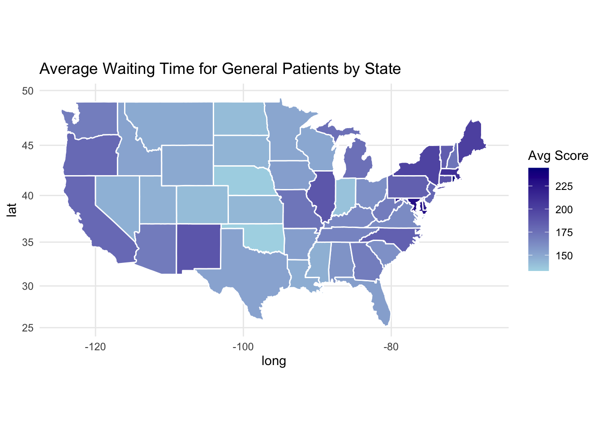
# Map for OP_18c (d2)
map_d2 <- make_map(d2_avg, "Average Waiting Time for Psychiatric/mental Health Patients by State")
print(map_d2)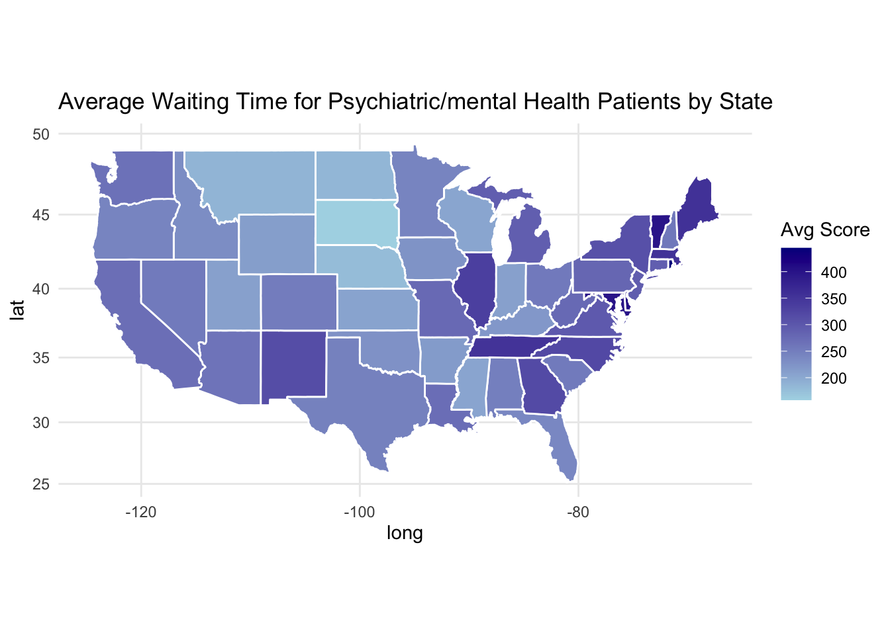
# Create histograms of the distribution of average scores for each subset
ggplot(care_state_modified, aes(x = score, fill = measure_id)) +
geom_histogram(position = "identity",
color = "black",
alpha = 0.5) + # Set transparency
labs(title = "Distribution of Waiting Time",
x = "Score",
y = "Count",
fill = "Measure") +
scale_fill_manual(values = c("OP_18b" = "lightblue",
"OP_18c" = "lightgreen"),
labels = c("OP_18b" = "general patients",
"OP_18c" = "psychiatric/mental health patients")) +
theme_minimal()`stat_bin()` using `bins = 30`. Pick better value with `binwidth`.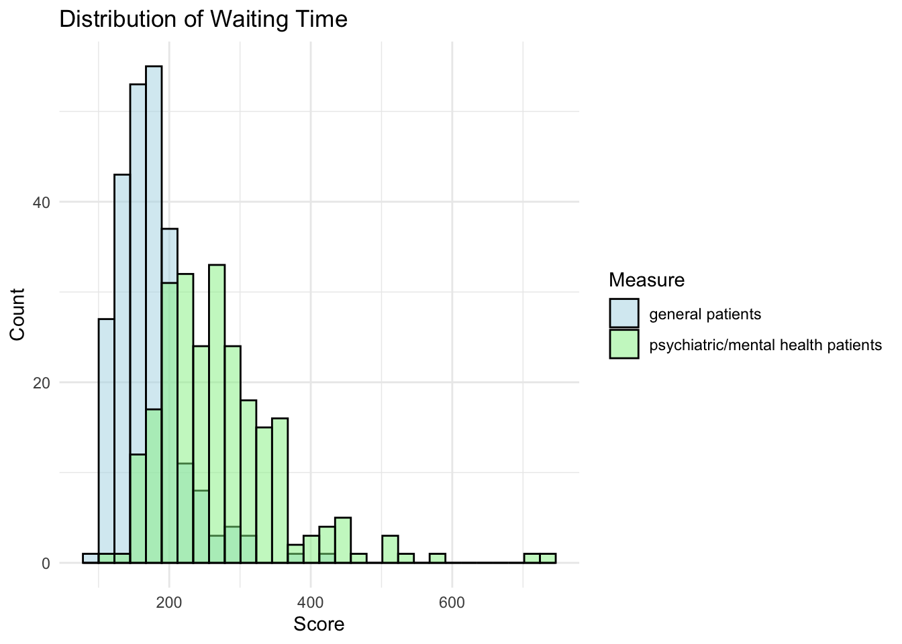
From the maps, it is noticeable that waiting times differ quite a bit from state to state. The histogram also shows that psychiatric/mental health patients tend to have longer waiting times compared to general patients. Based on these observations, waiting time is an interesting outcome to study, with state and type of patient as the main factors.
Model fitting
- Linear regression model
# Set the seed
set.seed(123)
# Split the data into training and testing sets
data_split <- initial_split(care_state_modified, prop = 0.8)
train_data <- training(data_split)
test_data <- testing(data_split)
# Create a recipe for the linear model with predictors state and measure_id, and convert categorical predictors to dummy variables
lr_model_recipe <- recipe(score ~ state + measure_id, data = train_data) %>%
step_dummy(all_nominal_predictors())
# Specify a linear regression model using the lm engine
lr_model_spec <- linear_reg() %>%
set_engine("lm")
# Combine the recipe and model into a workflow
lr_model_wf <- workflow() %>%
add_recipe(lr_model_recipe) %>%
add_model(lr_model_spec)
# Set up 5-fold cross-validation repeated 5 times
lr_cv_folds <- vfold_cv(train_data, v = 5, repeats = 5)
# Fit the model using cross-validation with RMSE as the metric
lr_cv_results <- fit_resamples(
lr_model_wf,
resamples = lr_cv_folds,
metrics = metric_set(rmse)
)
# Extract RMSE and standard error from the CV results
lr_rmse_summary <- collect_metrics(lr_cv_results) %>% filter(.metric == "rmse")
lr_rmse_mean <- lr_rmse_summary$mean
lr_rmse_se <- lr_rmse_summary$std_err
cat("5-Fold CV RMSE:\n")5-Fold CV RMSE:cat("Mean RMSE:", round(lr_rmse_mean, 2), "\n")Mean RMSE: 57.27 cat("Standard Error:", round(lr_rmse_se, 4), "\n\n")Standard Error: 1.5186 # Compute RMSE for the null model (predicting the mean score)
lr_null_rmse <- train_data %>%
mutate(pred_null = mean(score)) %>%
metrics(truth = score, estimate = pred_null) %>%
filter(.metric == "rmse") %>%
pull(.estimate)
cat("Null Model (predicting mean score) RMSE:", round(lr_null_rmse, 2), "\n\n")Null Model (predicting mean score) RMSE: 86.16 # Fit the final model on the entire training set
lr_final_fit <- fit(lr_model_wf, data = train_data)
# Create a data frame of observed and predicted values on the training set, and compute residuals
lr_train_predictions <- train_data %>%
mutate(
pred = predict(lr_final_fit, new_data = train_data)$.pred,
residual = score - pred
)
# Plot observed vs. predicted values
lr_p_obs_pred <- ggplot(lr_train_predictions, aes(x = score, y = pred)) +
geom_point(alpha = 0.6, color = "deepskyblue") +
geom_abline(slope = 1, intercept = 0, linetype = "dashed", color = "gray") +
labs(title = "Observed vs Predicted Values for Linear Regression",
x = "Observed Score",
y = "Predicted Score") +
theme_minimal() +
scale_x_continuous(limits = c(0, 800)) +
scale_y_continuous(limits = c(0, 800)) +
theme(plot.title = element_text(face = "bold", size = 16, hjust = 0.5),
axis.title = element_text(face = "bold", size = 14))
print(lr_p_obs_pred)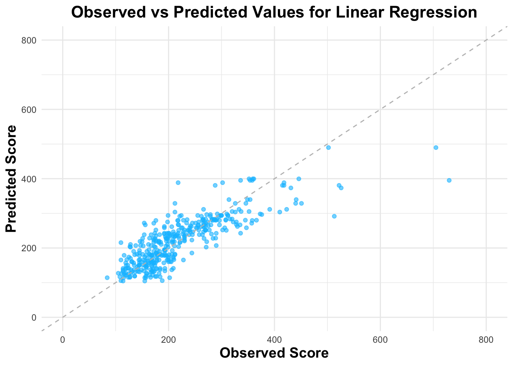
# Plot Residual vs. Predicted values
lr_p_residual <-ggplot(lr_train_predictions, aes(x = pred, y = residual)) +
geom_point(alpha = 0.6, color = "deepskyblue") +
geom_hline(yintercept = 0, linetype = "dashed", color = "red") +
labs(title = "Residuals vs Predicted Values for Linear Regression",
x = "Predicted Values",
y = "Residuals") +
theme_minimal() +
scale_y_continuous(limits = c(-500, 500)) +
theme(plot.title = element_text(face = "bold", size = 16, hjust = 0.5),
axis.title = element_text(face = "bold", size = 14))
print(lr_p_residual)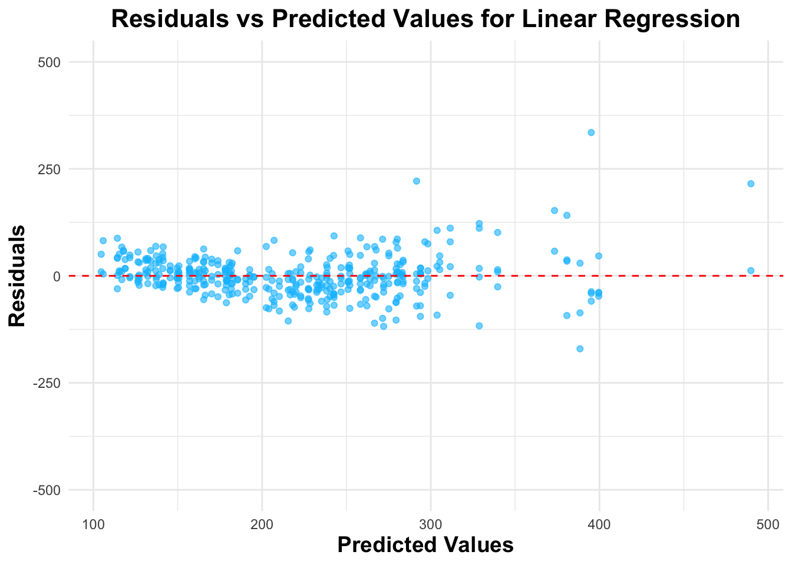
- Random forest model
# Set the seed
set.seed(123)
# Create a recipe for the random forest model using predictors state and measure_id;
# step_dummy() will prepare the data for modeling
rf_recipe <- recipe(score ~ state + measure_id, data = train_data) %>%
step_dummy(all_nominal_predictors())
# Specify a random forest model with quantile regression enabled using the "ranger" engine
rf_model_spec <- rand_forest(mode = "regression") %>%
set_engine("ranger", quantreg = TRUE)
# Combine the recipe and model specification into a workflow
rf_wf <- workflow() %>%
add_recipe(rf_recipe) %>%
add_model(rf_model_spec)
# Set up 5-fold cross-validation repeated 5 times
rf_cv_folds <- vfold_cv(train_data, v = 5, repeats = 5)
# Fit the random forest model using cross-validation with RMSE as the metric
rf_cv_results <- fit_resamples(
rf_wf,
resamples = rf_cv_folds,
metrics = metric_set(rmse)
)
# Extract RMSE and standard error from the CV results
rf_rmse_summary <- collect_metrics(rf_cv_results) %>% filter(.metric == "rmse")
rf_rmse_mean <- rf_rmse_summary$mean
rf_rmse_se <- rf_rmse_summary$std_err
cat("5-Fold CV RMSE:\n")5-Fold CV RMSE:cat("Mean RMSE:", round(rf_rmse_mean, 2), "\n")Mean RMSE: 58.91 cat("Standard Error:", round(rf_rmse_se, 4), "\n\n")Standard Error: 1.9988 # Compute RMSE for the null model (predicting the mean score) on the training data
rf_null_rmse <- train_data %>%
mutate(pred_null = mean(score)) %>%
metrics(truth = score, estimate = pred_null) %>%
filter(.metric == "rmse") %>%
pull(.estimate)
cat("Null Model (predicting mean score) RMSE:", round(rf_null_rmse, 2), "\n\n")Null Model (predicting mean score) RMSE: 86.16 # Fit the final random forest model on the entire training set
rf_final_fit <- fit(rf_wf, data = train_data)
# Create a data frame of observed and predicted values (and residuals) on the training set
rf_train_predictions <- train_data %>%
mutate(
pred = predict(rf_final_fit, new_data = train_data)$.pred,
residual = score - pred
)
# Observed vs Predicted Plot
rf_p_obs_pred <- ggplot(rf_train_predictions, aes(x = score, y = pred)) +
geom_point(alpha = 0.6, color = "deepskyblue") +
geom_abline(slope = 1, intercept = 0, linetype = "dashed", color = "gray") +
labs(title = "Observed vs Predicted Values for Random Forest",
x = "Observed Score",
y = "Predicted Score") +
theme_minimal() +
scale_x_continuous(limits = c(0, 800)) +
scale_y_continuous(limits = c(0, 800)) +
theme(
plot.title = element_text(face = "bold", size = 16, hjust = 0.5),
axis.title = element_text(face = "bold", size = 14)
)
print(rf_p_obs_pred)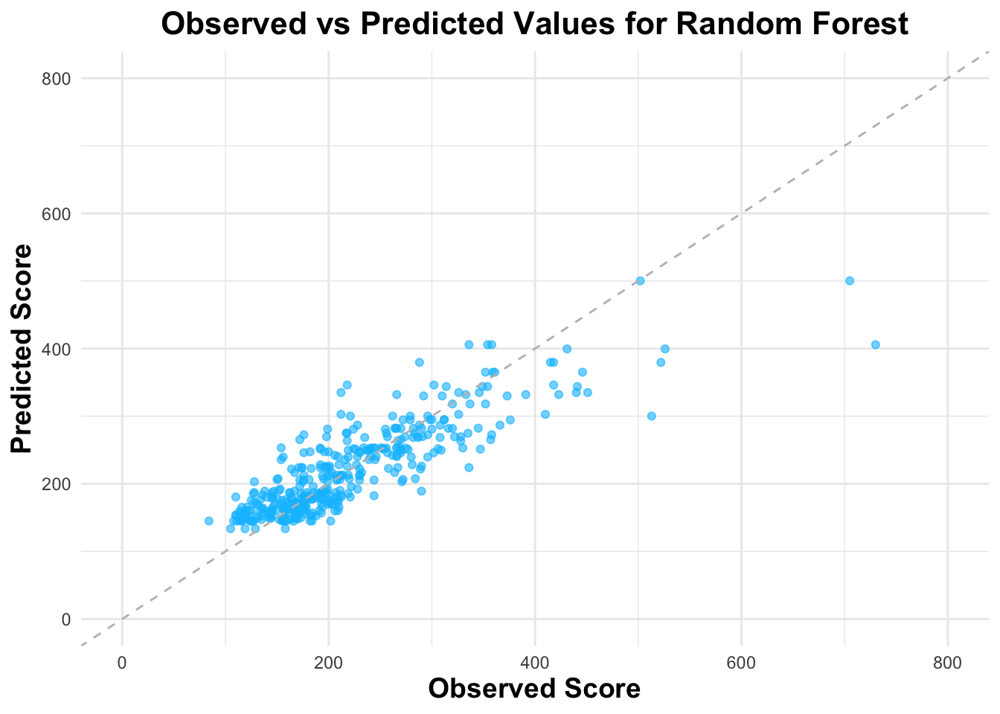
# Residual Plot (Residuals vs Predicted)
rf_p_residual <- ggplot(rf_train_predictions, aes(x = pred, y = residual)) +
geom_point(alpha = 0.6, color = "deepskyblue") +
geom_hline(yintercept = 0, linetype = "dashed", color = "red") +
labs(title = "Residuals vs Predicted Values for Random Forest",
x = "Predicted Score",
y = "Residuals") +
theme_minimal() +
scale_y_continuous(limits = c(-500, 500)) +
theme(
plot.title = element_text(face = "bold", size = 16, hjust = 0.5),
axis.title = element_text(face = "bold", size = 14)
)
print(rf_p_residual)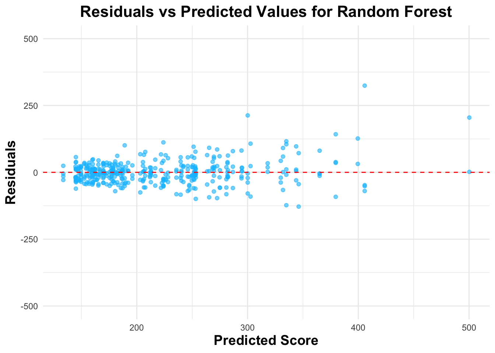
- Gradient Boosted Trees (XGBoost)
# Set the seed
set.seed(123)
# Create a recipe for the XGBoost model using predictors state and measure_id;
# step_dummy() will prepare the data (convert categorical predictors to dummy variables)
xgb_recipe <- recipe(score ~ state + measure_id, data = train_data) %>%
step_dummy(all_nominal_predictors())
# Specify an XGBoost model for regression
xgb_model_spec <- boost_tree(mode = "regression") %>%
set_engine("xgboost")
# Combine the recipe and model specification into a workflow
xgb_wf <- workflow() %>%
add_recipe(xgb_recipe) %>%
add_model(xgb_model_spec)
# Set up 5-fold cross-validation repeated 5 times
xgb_cv_folds <- vfold_cv(train_data, v = 5, repeats = 5)
# Fit the XGBoost model using cross-validation with RMSE as the metric
xgb_cv_results <- fit_resamples(
xgb_wf,
resamples = xgb_cv_folds,
metrics = metric_set(rmse)
)
# Extract RMSE and standard error from the CV results
xgb_rmse_summary <- collect_metrics(xgb_cv_results) %>% filter(.metric == "rmse")
xgb_rmse_mean <- xgb_rmse_summary$mean
xgb_rmse_se <- xgb_rmse_summary$std_err
cat("5-Fold CV RMSE for XGBoost:\n")5-Fold CV RMSE for XGBoost:cat("Mean RMSE:", round(xgb_rmse_mean, 2), "\n")Mean RMSE: 59.9 cat("Standard Error:", round(xgb_rmse_se, 4), "\n\n")Standard Error: 2.4328 # Compute RMSE for the null model (predicting the mean score) using the training data
xgb_null_rmse <- train_data %>%
mutate(pred_null = mean(score)) %>%
metrics(truth = score, estimate = pred_null) %>%
filter(.metric == "rmse") %>%
pull(.estimate)
cat("Null Model (predicting mean score) RMSE:", round(xgb_null_rmse, 2), "\n\n")Null Model (predicting mean score) RMSE: 86.16 # Fit the final XGBoost model on the entire training set
xgb_final_fit <- fit(xgb_wf, data = train_data)
# Create a data frame of observed and predicted values (and residuals) on the training set
xgb_train_predictions <- train_data %>%
mutate(
pred = predict(xgb_final_fit, new_data = train_data)$.pred,
residual = score - pred
)
# Observed vs Predicted Plot
xgb_p_obs_pred <- ggplot(xgb_train_predictions, aes(x = score, y = pred)) +
geom_point(alpha = 0.6, color = "deepskyblue") +
geom_abline(slope = 1, intercept = 0, linetype = "dashed", color = "gray") +
labs(title = "Observed vs Predicted Values for XGBoost",
x = "Observed Score",
y = "Predicted Score") +
theme_minimal() +
scale_x_continuous(limits = c(0, 800)) +
scale_y_continuous(limits = c(0, 800)) +
theme(
plot.title = element_text(face = "bold", size = 16, hjust = 0.5),
axis.title = element_text(face = "bold", size = 14)
)
print(xgb_p_obs_pred)# Residual Plot (Residuals vs Predicted)
xgb_p_residual <- ggplot(xgb_train_predictions, aes(x = pred, y = residual)) +
geom_point(alpha = 0.6, color = "deepskyblue") +
geom_hline(yintercept = 0, linetype = "dashed", color = "red") +
labs(title = "Residuals vs Predicted Values for XGBoost",
x = "Predicted Score",
y = "Residuals") +
theme_minimal() +
scale_y_continuous(limits = c(-500, 500)) +
theme(
plot.title = element_text(face = "bold", size = 16, hjust = 0.5),
axis.title = element_text(face = "bold", size = 14)
)
print(xgb_p_residual)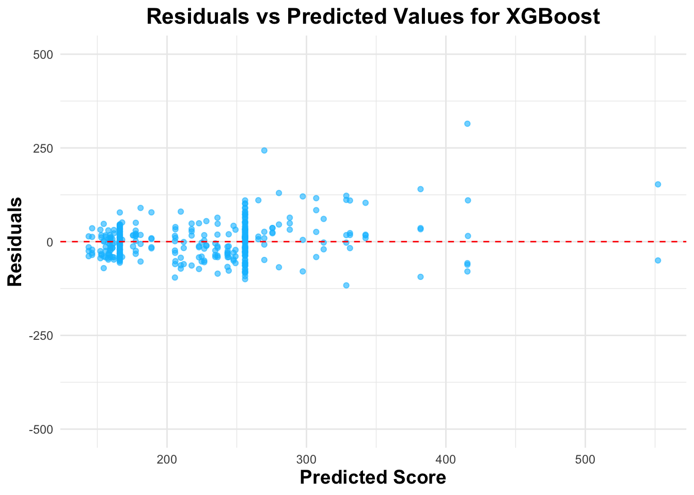
- SVM
# Set the seed
set.seed(123)
# Create a recipe for the SVM model using predictors state and measure_id;
# this converts categorical predictors to dummy variables
svm_recipe <- recipe(score ~ state + measure_id, data = train_data) %>%
step_dummy(all_nominal_predictors())
# Specify an SVM model for regression using an RBF kernel,
# and set the engine to "kernlab"
svm_model_spec <- svm_rbf(mode = "regression") %>%
set_engine("kernlab")
# Combine the recipe and model specification into a workflow
svm_wf <- workflow() %>%
add_recipe(svm_recipe) %>%
add_model(svm_model_spec)
# Set up 5-fold cross-validation repeated 5 times
svm_cv_folds <- vfold_cv(train_data, v = 5, repeats = 5)
# Fit the model on the cross-validation folds using RMSE as the metric
svm_cv_results <- fit_resamples(
svm_wf,
resamples = svm_cv_folds,
metrics = metric_set(rmse)
)
# Extract RMSE and standard error from the CV results
svm_rmse_summary <- collect_metrics(svm_cv_results) %>% filter(.metric == "rmse")
svm_rmse_mean <- svm_rmse_summary$mean
svm_rmse_se <- svm_rmse_summary$std_err
cat("5-Fold CV RMSE for SVM:\n")5-Fold CV RMSE for SVM:cat("Mean RMSE:", round(svm_rmse_mean, 2), "\n")Mean RMSE: 60.83 cat("Standard Error:", round(svm_rmse_se, 4), "\n\n")Standard Error: 2.1674 # Compute RMSE for the null model (predicting the mean score) on the training data
svm_null_rmse <- train_data %>%
mutate(pred_null = mean(score)) %>%
metrics(truth = score, estimate = pred_null) %>%
filter(.metric == "rmse") %>%
pull(.estimate)
cat("Null Model (predicting mean score) RMSE:", round(svm_null_rmse, 2), "\n\n")Null Model (predicting mean score) RMSE: 86.16 # Fit the final SVM model on the entire training set
svm_final_fit <- fit(svm_wf, data = train_data)
# Create a data frame of observed and predicted values (and residuals) on the training set
svm_train_predictions <- train_data %>%
mutate(
pred = predict(svm_final_fit, new_data = train_data)$.pred,
residual = score - pred
)
# Observed vs Predicted Plot
svm_p_obs_pred <- ggplot(svm_train_predictions, aes(x = score, y = pred)) +
geom_point(alpha = 0.6, color = "deepskyblue") +
geom_abline(slope = 1, intercept = 0, linetype = "dashed", color = "gray") +
labs(title = "Observed vs Predicted Values for SVM",
x = "Observed Score",
y = "Predicted Score") +
theme_minimal() +
scale_x_continuous(limits = c(0, 800)) +
scale_y_continuous(limits = c(0, 800)) +
theme(
plot.title = element_text(face = "bold", size = 16, hjust = 0.5),
axis.title = element_text(face = "bold", size = 14)
)
print(svm_p_obs_pred)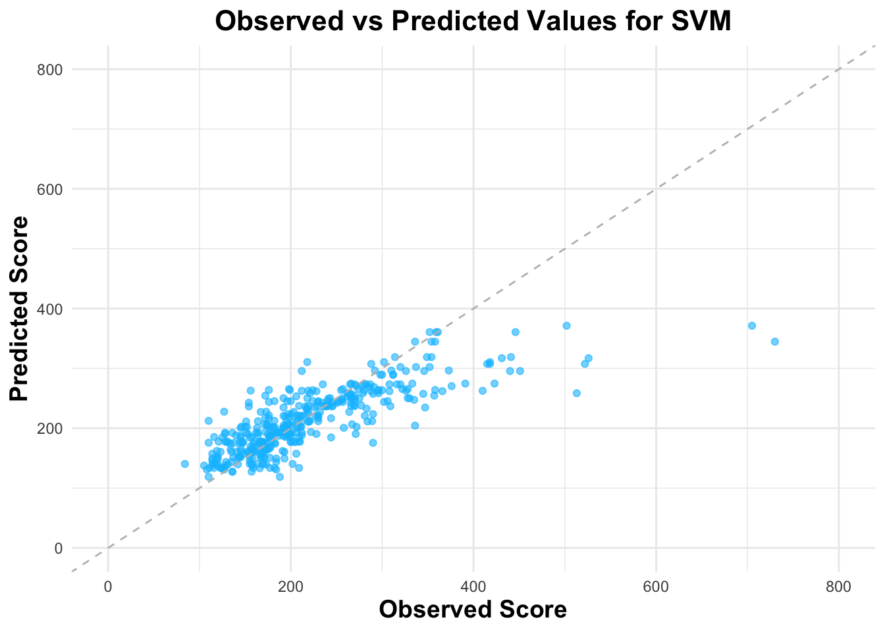
# Residual Plot (Residuals vs Predicted)
svm_p_residual <- ggplot(svm_train_predictions, aes(x = pred, y = residual)) +
geom_point(alpha = 0.6, color = "deepskyblue") +
geom_hline(yintercept = 0, linetype = "dashed", color = "red") +
labs(title = "Residuals vs Predicted Values for SVM",
x = "Predicted Score",
y = "Residuals") +
theme_minimal() +
scale_y_continuous(limits = c(-500, 500)) +
theme(
plot.title = element_text(face = "bold", size = 16, hjust = 0.5),
axis.title = element_text(face = "bold", size = 14)
)
print(svm_p_residual)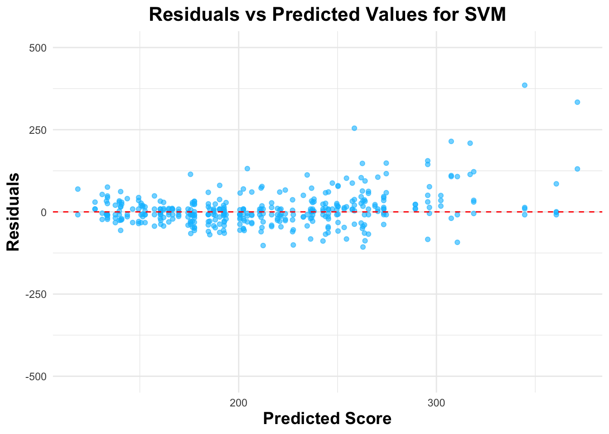
Discussion
The observed vs predicted values plot and residuals plot shows similar results among the four models. They all perform not very well when the score is higher. There are slight differences in RMSE among models: Linear Regression (RMSE = 57.27), Random Forest (RMSE = 58.91), XGBoost (RMSE = 59.9), SVM (RMSE = 60.83). The linear regression model has the lowest RMSE (57.61), which indicates that it makes the smallest prediction errors on training data. This slight difference suggests that adding complexity did not yield better performance overall. In addition, linear regression is relatively simple, interpretable, and computationally efficient. Therefore, I would like to choose linear regression model as the overall best one.
Final evaluation
# Generate test data predictions from your fitted linear model (lr_final_fit)
lr_test_predictions <- test_data %>%
mutate(
pred = predict(lr_final_fit, new_data = test_data)$.pred,
residual = score - pred
)
# Evaluate performance on the test data (RMSE)
lr_test_metrics <- metrics(lr_test_predictions, truth = score, estimate = pred)
lr_test_rmse <- lr_test_metrics %>% filter(.metric == "rmse")
cat("Test Data RMSE:", round(lr_test_rmse$.estimate, 2), "\n\n")Test Data RMSE: 54.75 # Create an Observed vs. Predicted Plot for the test data
lr_test_obs_pred <- ggplot(lr_test_predictions, aes(x = score, y = pred)) +
geom_point(alpha = 0.6, color = "deepskyblue") +
geom_abline(slope = 1, intercept = 0, linetype = "dashed", color = "gray") +
labs(
title = "Observed vs. Predicted (Test Data)",
x = "Observed Score",
y = "Predicted Score"
) +
theme_minimal() +
scale_x_continuous(limits = c(0, 800)) +
scale_y_continuous(limits = c(0, 800)) +
theme(
plot.title = element_text(face = "bold", size = 16, hjust = 0.5),
axis.title = element_text(face = "bold", size = 14)
)
print(lr_test_obs_pred)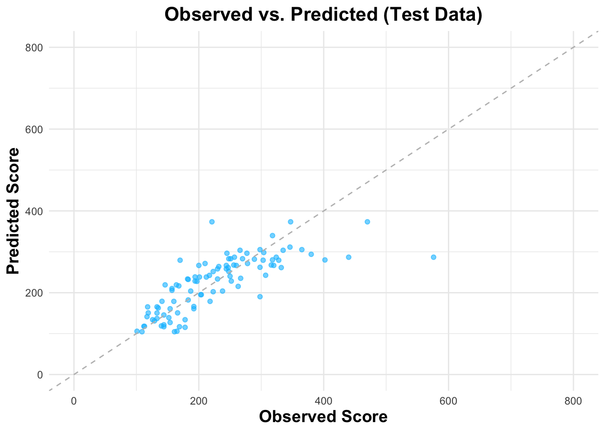
# Create a Residual Plot (Residuals vs. Predicted) for the test data
lr_test_residual <- ggplot(lr_test_predictions, aes(x = pred, y = residual)) +
geom_point(alpha = 0.6, color = "deepskyblue") +
geom_hline(yintercept = 0, linetype = "dashed", color = "red") +
labs(
title = "Residuals vs. Predicted (Test Data)",
x = "Predicted Score",
y = "Residuals"
) +
theme_minimal() +
scale_y_continuous(limits = c(-500, 500)) +
theme(
plot.title = element_text(face = "bold", size = 16, hjust = 0.5),
axis.title = element_text(face = "bold", size = 14)
)
print(lr_test_residual)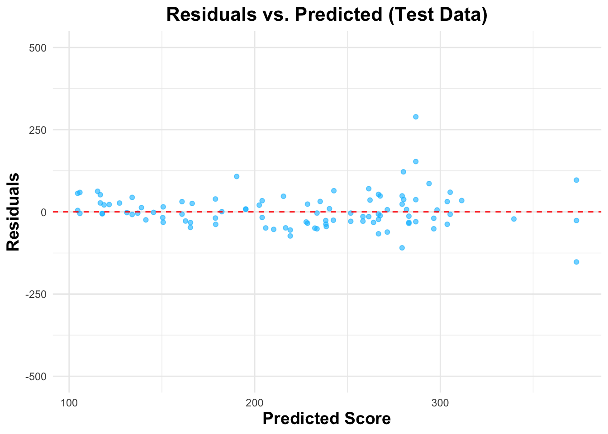
The test data RMSE 54.75 and training data RMSE 57.27 are similar, which indicates the linear regression model generalizes well and is not overfitting. There are also some deviations when the score is higher. Overall, the model is performing consistently.
Summary
The linear regression analysis demonstrates that both the state in which care is provided and the type of patient (general versus psychiatric/mental health) are important predictors of waiting time. Specifically, there appears to be a significant correlation between state and waiting time, with different states showing distinct average waiting periods. Additionally, psychiatric/mental health patients tend to have longer waiting times compared to their general patient counterparts. Given that the model’s RMSE on both the training and test sets is similar (57.27 vs. 54.75), these relationships seem robust, suggesting that these factors should be considered to understand waiting time.